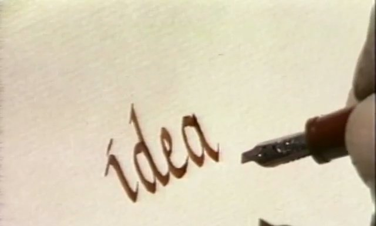
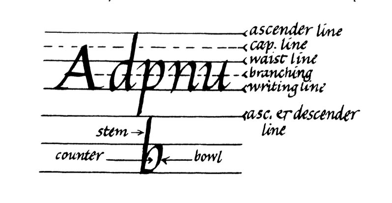
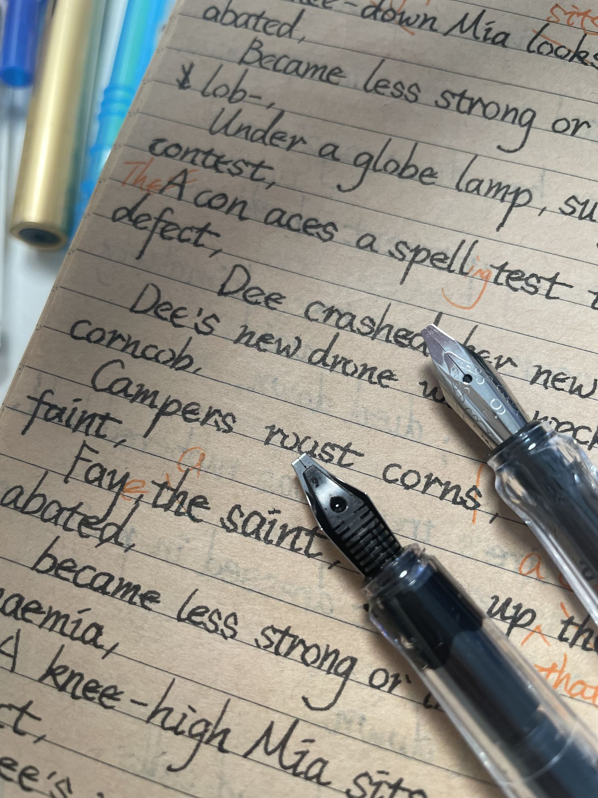

重看里德学院的书法课，这回我听懂了
我有些用了一点的病历本。我把前几页撕下来，剩下来的拿来默写单词。钢笔在长条本上移动得意外地顺滑。我猜医生们要更快地书写吧，所以纸面特意造得很光滑。我用过复印纸、笔记本和护眼本，但病历本是最好用的。
说起默写，其实我在默写英文句子。我用 AI 给每个生词造了个句。前半句里有发音暗示词，后半句管词意，整个句子也有画面，方便回想。比如 cramp 这个词，我背的句子是“A crow camped in my tent; no room to move.”。crow camped 念着像 cramp，no room to move 就是它的意思：挤得动弹不得。
英文越写越多，字母天天见，我却开始看不下去了。怎么说呢，不是不能看，是看着越来越闹心。
于是我准备练英文书法。我让 AI 去找些经典教程。它推荐的是花体字课程，可不便宜。我不好意思花这个钱，因为我还没挣到钱，还在啃老呢。我又在 YouTube 上逛来逛去，忽然记起里德学院有英文书法课。我跑去它家官网，找到了教学视频，而且免费，真是太好了！
我是从苹果公司 CEO 乔布斯那里听说里德学院的。他那时在斯坦福大学演讲。他讲到自己辍学，当旁听生，学了自己喜欢的书法课。这个经历后来启发他设计了苹果电脑里有名的排版系统。
其实几年前，我就看过这套课的第一集视频。但那时我的词汇量不大，自己也不知道这一点，很多细节我听不出来。我只觉得学不会，就放弃了。
可现在不一样了。这阵子我每天默写 10 个生词的句子，已经背下了 150 个。有了它们打底，我听出了很多细节。比如教授说“Writing with the fingers will give you finger cramp.”，cramp 这个词我平时很少读到，可他一说出口，我脑子里先冒出来的是那只挤在我帐篷里的乌鸦。我马上明白了：光用手指写字，手指会抽筋。就像长年眼花的人终于肯买眼镜了，镜框一架在鼻梁上，他马上就能看清之前模糊的小字了。
AI 推荐的是花体字，而这个课程教的是斜体字（Italic）。我觉得这两种字体差不多。直到我了解了一段不为人知的书写故事。
最早人们把木棍削尖，蘸上墨汁写字。两千多年前，罗马人把笔头横着削平。到了十五世纪初，意大利人用这种平头笔写出了优雅的斜体字。只要控制好角度，就可以写出主干粗、连结细的字体。这要用手腕发力，也不伤手。
后来这种写法失传了。人们写字发力开始往手指移动。字写久了，手指会很痛。为了解决这个问题，十八世纪的书写老师又发明了小臂发力的花体字。原来斜体才是正宗，花体是后来的将就。
到了二十世纪，斜体字又复兴了，在欧洲越来越流行，瑞典的学校甚至只教这一种手写体。里德学院的雷诺兹教授也把它搬上了电视，让这门手艺又回到了大众眼前，我找到的就是这套课。
练字会用到一种特别的钢笔。它的笔尖像被锋利的刀子削平了，也叫平头钢笔，或者叫鸭嘴笔、藏文笔。用这种钢笔以 45 度角向上推，可以写出很细的线，而保持同样的角度不变，向下拖，可以写出很粗的线条。笔尖像把小扁铲，顺着刃口走线就细，横着刃口走线就粗。课程里的英文都是这样写出来的。

看到练习用的例子，我马上想到可以用 AI 控制摄像头，“看”到我写的字，再立刻指出不足。也许我就能更快地进步。但转念一想，写字不光是练手，还要练眼力。用 AI 监督可以做到又快又准，但它也会跳过练眼的过程。离开 AI，我还是写不好字。
我还是乖乖地用眼睛找错吧。
练这种字，要有带标线的纸。一行英文有六条标线：底线、腰线、大写线等等。

它们之间相互平行，间距按笔尖宽度来定：底线到腰线是五个笔尖宽。笔越粗，标线隔得越开，每支笔都要配自己的练习纸。我买了一套四十多块的钢笔套装，从 2.9mm 到 0.7mm 一共六支。

我让 AI 照着笔宽画标线模板，打印出来当练习纸。我先拿最粗的 2.9mm 笔来试。标线要精确到毫米，我寻思 AI 做出来的模板肯定有不小的误差，应该要调很久吧。
谁知 AI 一次就做对了！我拿尺子去量，宽度精准。AI 还支持不同笔宽，下次告诉它新的笔宽，另一张精确的练习纸就打印好了。
AI 也不是次次都能做对。我让它把两页打在一张 A4 纸上。照理说，它应该能想到把纸横过来，并排打印。但它第一次还是打成了竖排，只有一页完整，另一页只印了一半。不过纠正一次，它就改好了。
最后轮到我自己练字了。我要用自己的手去感觉，用自己的眼睛去观察。AI 帮不上我了，也不应该帮，不是吗？
「与 AI 同行」争取每周一发刊。
如果你对我的内容有什么想法，可以直接回复这封信告诉我。
PS：你收到这封邮件是因为你订阅了我的电子报。你随时都可以取消订阅。